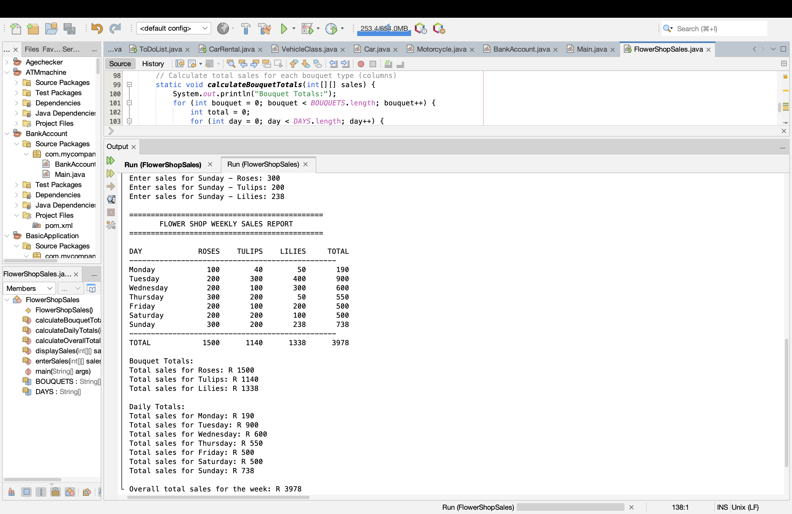
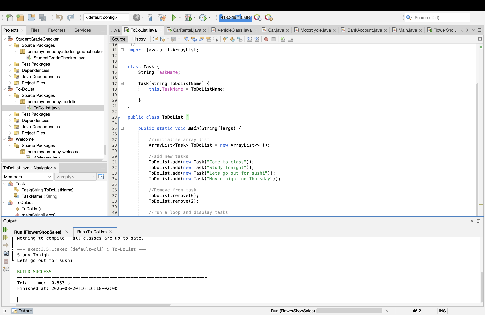

My Projects
Below are some of the programming projects I have completed while developing my Computer Science skills.
Java Flower Shop Sales Program

This project is a Java-based flower shop sales program designed to record and process sales information. The program uses arrays, loops and programming logic to organise flower sales and calculate results.
Technologies Used
- Java
- NetBeans
- Arrays
- Loops
Skills demonstrated: Programming logic, arrays, loops and problem solving.
Java To-Do List Application

This project is a simple task management application developed using Java. It allows tasks to be stored and managed using an ArrayList and demonstrates the use of classes and objects.
Technologies Used
- Java
- ArrayList
- Object-Oriented Programming
- NetBeans
Skills demonstrated: Classes, constructors, ArrayLists and object-oriented programming.